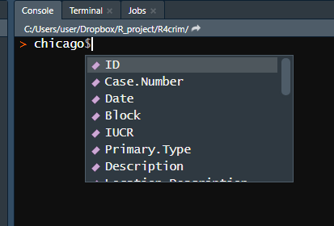

2 Subsetting: Making big things small
Subsetting data is a way to take a large data set and reduce it to a smaller one that is better suited for answering a specific question. This is useful when you have a lot of data in the data set that isn’t relevant to your research - for example, if you are studying crime in Colorado and have every state in your data, you’d subset it to keep only the Colorado data. Reducing it to a smaller data set makes it easier to manage, both in understanding your data and avoiding have a huge file that could slow down R.
2.1 Select specific values
Here we have made an object called animals with a number of different animals in it (we’ll explain what it really means to “make an object” soon). In R, we will use square brackets [] to select specific values in that object, something called “indexing”. Put a number (or numbers) in the square bracket and it will return the value at that “index”. The index is just the place number where each value is. “cat” is the first value in animals so it is at the first index, “dog” is the second value so it is the second index or index 2. “snake” is our last value and is the 6th value in animals so it is index 6 (some languages use “zero indexing” which means the first index is index 0, the second is index 1. So in our example “cat” would be index 0. R does not do that and the first value is index 1, the second is index 2 and so on.).
The syntax (how the code is written) goes
object[index]
First we have the object and then we put the square bracket []. We need both the object and the [] for subsetting to work. Let’s say we wanted to choose just the “snake” from our animals object. In normal language we say "I want the 6th value from animals. We say where we’re looking and which value we want.
Now let’s get the third value.
If we want multiple values we can enter multiple numbers. If you have multiple values, you need to make a vector using c() and put the numbers inside the parentheses separated by a comma. We’ll learn more about vectors and using c() in Section 2.3 shortly. If we wanted values 1-3 we could use c(1, 2, 3), with each number separated by a comma.
When making a vector of sequential integers, instead of writing them all out manually we can use first_number:last_number like so
To use it in subsetting we can treat 1:3 as if we wrote c(1, 2, 3).
The order we enter the numbers determines the order of the values it returns. Let’s get the third index, the fourth index, and the first index, in that order.
Putting a negative number inside the [] will return all values except for that index, essentially deleting it. Let’s remove “cat” from animals. Since it is the 1st item in animals we can remove it like this
Now let’s remove multiple values, the first 3.
2.2 Assigning values to objects (Making “things”)
Earlier we wrote animals <- c("cat", "dog", "gorilla", "buffalo", "lion", "snake") to make the object animals with the value of each of the different animals we wrote.
We say<- as “gets”. So above “animals gets the values cat, dog, etc.”. This is read from left to right as thing on left (the name of the object) “gets” the value of the thing on the right of the <-. The proper terminology is that the “thing” on the left is an “object”. So if we had x <- 5 the object x gets the value 5. We could also say “five was assigned to x”.
The terminology is “object gets value” or “value assigned to object”, both work.
You can use the = instead of <-. Again, the thing on the left gets the value of the thing on the right even when using =.
x now has the value of the number 2.
It is the convention in R to use <- instead of = and in some cases the = will not work properly. For those reasons we will use <- for this class.
Earlier I said we can remove values with using a negative number and that index will be removed from the object. For example, animals[-1] prints every value in th animals except for the first value.
However, it doesn’t actually remove anything from animals. Let’s print animals and see which values it returns.
Now the first value, “cats”, is back. Why? To make changes in R you need to tell R very explicitly that you are making the change. If you don’t save the result of your code (by assigning an object to it), R will run that code and simply print the results in the console panel without making any changes.
This is an important point that a lot of students struggle with. R doesn’t know when you want to save (in this context I am referring to creating or updating an object that is entirely in R, not saving a file to your computer) a value or update an object. If x is an object with a value of 2, and you write x + 2, it would print out 4 because 2 + 2 = 4. But that won’t change the value of x. x will remain as 2 until you explicitly tell R to change it’s value. If you want to update x you need to run x <- somevalue where “somevalue” is whatever you want to change x to.
So to return to our animals example, if we wanted to delete the first value and keep it removed, we’d need to write animals <- animals[-1]. Which is essentially making a new object, also called animals (to avoid having many, slightly different objects that are hard to keep track of we’ll reuse the name) with the same values as the original animals except this time excluding the first value, “cats”.
2.3 Vectors (collections of “things”)
When we made x we wrote x <- 2 while when we made animals we wrote animals <- c("cat", "dog", "gorilla", "buffalo", "lion", "snake"). The important difference is that when assigning multiple values to an object we must use the function c() which combines them together. With multiple values we follow the same pattern of object <- value but put the value inside of c() and separate each value by a comma.
The result of the c() is called a vector and you can think of it as a collection of values.
Note that vectors take values that are the same type, so all values included must be the same type such as a number or a string (a character type such as words or values with letters. In R they are put in quotes.). If they aren’t the same type R will automatically convert it.
Above we made a vector with the values “cat”, “dog” and 2 (without quotes) and it added quotes to the 2. Since everything must be the same type, R automatically converted the 2 to a string of “2”.
2.4 Logical values and operations
We also frequently want to conditionally select certain values. Earlier we selected values indexing specific numbers, but that requires us to know exactly which values we want. We can conditionally select values by having some conditional statement (e.g. “this value is lower than the number 100”) and keeping only values where that condition is true. When we talk about logical values we mean TRUE and FALSE - in R you must spell it in all capital letters.
First we will discuss conditionals abstractly and then we will use a real example using data from the FBI to make a data set tailored to answer a specific question.
We can use these TRUE and FALSE values to index and it will return every element which we say is TRUE.
This is the basis of conditional subsetting. If we have a large data set and only want a small chunk based on some condition (data in a single state (or multiple states), at a certain time, at least a certain population) we need to make a conditional statement that returns TRUE if it matches what we want and FALSE if it doesn’t. There are a number of different ways to make conditional statements. First let’s go through some special characters involved and then show examples of each one.
For each case you are asking: does the thing on the left of the conditional statement return TRUE or FALSE compared to the thing on the right.
==Equals (compared to a single value)%in%Equals (one value match out of multiple comparisons)!=Does not equal<Less than>Greater than<=Less than or equal to>=Greater than or equal to
Since many conditionals involve numbers (especially in criminology), let’s make a new object called numbers with the numbers 1-10.
2.4.1 Matching a single value
The conditional == asks if the thing on the left equals the thing on the right. Note that it uses two equal signs. If we used only one equal sign it would assign the thing on the left the value of the thing on the right (as if we did <-).
This gives TRUE as we know that 2 does equal 2. If we change either value, it would give us FALSE.
And it works when we have multiple numbers on the left side, such as our object called numbers.
This also works with characters such as the animals in the object we made earlier. “gorilla” is the third animal in our object, so if we check animals == “gorilla” we expect the third value to be TRUE and all others to be FALSE. Make sure that the match is spelled correctly (including capitalization) and is in quotes.
The == only works when there is one thing on the right hand side. In criminology we often want to know if there is a match for multiple things - is the crime one of the following crimes…, did the crime happen in one of these months…, is the victim a member of these demographic groups…? So we need a way to check if a value is one of many values.
2.4.2 Matching multiple values
The R operator %in% asks each value on the left whether or not it is a member of the set on the right. It asks, is the single value on the left hand side (even when there are multiple values such as our animals object, it goes through them one at a time) a match with any of the values on the right hand side? It only has to match with one of the right hand side values to be a match.
For our animals object, if we check if they are in the vector c("cat", "dog", "gorilla"), now all three of those animals will return TRUE.
2.4.3 Does not match
Sometimes it is easier to ask what is not a match. For example, if you wanted to get every month except January, instead of writing the other 11 months, you just ask for any month that does not equal “January”.
We can use !=, which means “not equal”. When we wanted an exact match we used ==, if we want a not match we can use != (this time it is only a single equals sign).
Note that for matching multiple values with %in%, we cannot write !%in% but have to put the ! before the values on the left.
2.4.4 Greater than or less than
We can use R to compare values using greater than or less than symbols. We can also express “greater than or equal to” or “less than or equal to.”
When used on our object numbers it will return 10 values (since numbers is 10 elements long) with a TRUE if the condition is true for the element and FALSE otherwise. Let’s run numbers > 3. We expect the first 3 values to be FALSE as 1, 2, and 3 are not larger than 3.
2.4.5 Combining conditional statements - or, and
In many cases when you are subsetting you will want to subset based on more than one condition. For example, let’s say you have crime data from every state between 1960 and 2017. Your research question is “did Colorado’s marijuana legalization affect crime in the state?” In that case you want only data from Colorado. Since legalization began in January 2014, you wouldn’t need every year, only years some period of time before and after legalization to be able to measure its effect. So you would need to subset based on the state and the year.
To make conditional statements with multiple conditions we use | for “or” and & for “and”.
Condition 1 | Condition 2
As it sounds, when using | as long as at least one condition is true (we can include as many conditions as we like) it will return TRUE.
Condition 1 & Condition 2
For &, all of the conditions must be true. If even one condition is not true it will return FALSE.
2.5 Subsetting a data.frame
Earlier we were using a simple vector (collection of values). In this class - and in your own work - you will usually work on an entire data set. These generally come in the form called a “data.frame” which you can imagine as being like an Excel file with multiple rows and columns.
Let’s load in data from the Uniform Crime Report (UCR), an FBI data set that we’ll work on in a later lesson. This data has crime data every year from 1960-2017 and for nearly every agency in the country.
Let’s peak at the first 6 rows and 6 columns using the square bracket notation [] for data.frames which we’ll explain more below.
offenses_known_yearly_1960_2017[1:6, 1:6]
#> ori ori9 agency_name state state_abb year
#> 1 AK00101 AK0010100 anchorage alaska AK 2017
#> 2 AK00101 AK0010100 anchorage alaska AK 2016
#> 3 AK00101 AK0010100 anchorage alaska AK 2015
#> 4 AK00101 AK0010100 anchorage alaska AK 2014
#> 5 AK00101 AK0010100 anchorage alaska AK 2013
#> 6 AK00101 AK0010100 anchorage alaska AK 2012The first 6 rows appear to be agency identification info for Anchorage, Alaska from 2017-2012. For good measure let’s check how many rows and columns are in this data. This will give us some guidance on subsetting which we’ll see below. nrow() gives us the number of rows and ncol() gives us the number of columns.
This is a large file with 159 columns and nearly a million rows. Normally we wouldn’t want to print out the names of all 159 columns but let’s do this here as we want to know the variables available to subset.
names(offenses_known_yearly_1960_2017)
#> [1] "ori" "ori9"
#> [3] "agency_name" "state"
#> [5] "state_abb" "year"
#> [7] "number_of_months_reported" "fips_state_code"
#> [9] "fips_county_code" "fips_state_county_code"
#> [11] "fips_place_code" "fips_state_place_code"
#> [13] "agency_type" "agency_subtype_1"
#> [15] "agency_subtype_2" "crosswalk_agency_name"
#> [17] "census_name" "population"
#> [19] "population_group" "country_division"
#> [21] "juvenile_age" "core_city_indication"
#> [23] "last_update" "fbi_field_office"
#> [25] "followup_indication" "zip_code"
#> [27] "covered_by_ori" "agency_count"
#> [29] "date_of_last_update" "month_included_in"
#> [31] "special_mailing_group" "special_mailing_address"
#> [33] "first_line_of_mailing_address" "second_line_of_mailing_address"
#> [35] "third_line_of_mailing_address" "fourth_line_of_mailing_address"
#> [37] "officers_killed_by_felony" "officers_killed_by_accident"
#> [39] "officers_assaulted" "actual_murder"
#> [41] "actual_manslaughter" "actual_rape_total"
#> [43] "actual_rape_by_force" "actual_rape_attempted"
#> [45] "actual_robbery_total" "actual_robbery_with_a_gun"
#> [47] "actual_robbery_with_a_knife" "actual_robbery_other_weapon"
#> [49] "actual_robbery_unarmed" "actual_assault_total"
#> [51] "actual_assault_with_a_gun" "actual_assault_with_a_knife"
#> [53] "actual_assault_other_weapon" "actual_assault_unarmed"
#> [55] "actual_assault_simple" "actual_burg_total"
#> [57] "actual_burg_force_entry" "actual_burg_nonforce_entry"
#> [59] "actual_burg_attempted" "actual_theft_total"
#> [61] "actual_mtr_veh_theft_total" "actual_mtr_veh_theft_car"
#> [63] "actual_mtr_veh_theft_truck" "actual_mtr_veh_theft_other"
#> [65] "actual_all_crimes" "actual_assault_aggravated"
#> [67] "actual_index_violent" "actual_index_property"
#> [69] "actual_index_total" "tot_clr_murder"
#> [71] "tot_clr_manslaughter" "tot_clr_rape_total"
#> [73] "tot_clr_rape_by_force" "tot_clr_rape_attempted"
#> [75] "tot_clr_robbery_total" "tot_clr_robbery_with_a_gun"
#> [77] "tot_clr_robbery_with_a_knife" "tot_clr_robbery_other_weapon"
#> [79] "tot_clr_robbery_unarmed" "tot_clr_assault_total"
#> [81] "tot_clr_assault_with_a_gun" "tot_clr_assault_with_a_knife"
#> [83] "tot_clr_assault_other_weapon" "tot_clr_assault_unarmed"
#> [85] "tot_clr_assault_simple" "tot_clr_burg_total"
#> [87] "tot_clr_burg_force_entry" "tot_clr_burg_nonforce_entry"
#> [89] "tot_clr_burg_attempted" "tot_clr_theft_total"
#> [91] "tot_clr_mtr_veh_theft_total" "tot_clr_mtr_veh_theft_car"
#> [93] "tot_clr_mtr_veh_theft_truck" "tot_clr_mtr_veh_theft_other"
#> [95] "tot_clr_all_crimes" "tot_clr_assault_aggravated"
#> [97] "tot_clr_index_violent" "tot_clr_index_property"
#> [99] "tot_clr_index_total" "clr_18_murder"
#> [101] "clr_18_manslaughter" "clr_18_rape_total"
#> [103] "clr_18_rape_by_force" "clr_18_rape_attempted"
#> [105] "clr_18_robbery_total" "clr_18_robbery_with_a_gun"
#> [107] "clr_18_robbery_with_a_knife" "clr_18_robbery_other_weapon"
#> [109] "clr_18_robbery_unarmed" "clr_18_assault_total"
#> [111] "clr_18_assault_with_a_gun" "clr_18_assault_with_a_knife"
#> [113] "clr_18_assault_other_weapon" "clr_18_assault_unarmed"
#> [115] "clr_18_assault_simple" "clr_18_burg_total"
#> [117] "clr_18_burg_force_entry" "clr_18_burg_nonforce_entry"
#> [119] "clr_18_burg_attempted" "clr_18_theft_total"
#> [121] "clr_18_mtr_veh_theft_total" "clr_18_mtr_veh_theft_car"
#> [123] "clr_18_mtr_veh_theft_truck" "clr_18_mtr_veh_theft_other"
#> [125] "clr_18_all_crimes" "clr_18_assault_aggravated"
#> [127] "clr_18_index_violent" "clr_18_index_property"
#> [129] "clr_18_index_total" "unfound_murder"
#> [131] "unfound_manslaughter" "unfound_rape_total"
#> [133] "unfound_rape_by_force" "unfound_rape_attempted"
#> [135] "unfound_robbery_total" "unfound_robbery_with_a_gun"
#> [137] "unfound_robbery_with_a_knife" "unfound_robbery_other_weapon"
#> [139] "unfound_robbery_unarmed" "unfound_assault_total"
#> [141] "unfound_assault_with_a_gun" "unfound_assault_with_a_knife"
#> [143] "unfound_assault_other_weapon" "unfound_assault_unarmed"
#> [145] "unfound_assault_simple" "unfound_burg_total"
#> [147] "unfound_burg_force_entry" "unfound_burg_nonforce_entry"
#> [149] "unfound_burg_attempted" "unfound_theft_total"
#> [151] "unfound_mtr_veh_theft_total" "unfound_mtr_veh_theft_car"
#> [153] "unfound_mtr_veh_theft_truck" "unfound_mtr_veh_theft_other"
#> [155] "unfound_all_crimes" "unfound_assault_aggravated"
#> [157] "unfound_index_violent" "unfound_index_property"
#> [159] "unfound_index_total"Now let’s discuss how to subset this data into a smaller data set to answer a specific question. Let’s subset the data to answer our above question of “did Colorado’s marijuana legalization affect crime in the state?” Like mentioned above, we need data just from Colorado and just for years around the legalization year - we can do 2011-2017 for simplicity.
We also don’t need all 159 columns in the current data. Let’s say we’re only interested in if murder changes. We’d need the column called actual_murder, the state column (as a check to make sure we subset only Colorado), the year column, the population column, the ori column, and the agency_name column (a real analysis would likely grab geographic variables too to see if changes depended on location but here we’re just using it as an example). The last two columns - ori and agency_name - aren’t strictly necessary but would be useful if checking if an agency’s values are reasonable when checking for outliers, a step we won’t do here.
Before explaining how to subset from a data.frame, let’s write pseudocode (essentially a description of what we are going to do that is readable to people but isn’t real code) for our subset.
We want
- Only rows where the state equals Colorado
- Only rows where the year is 2011-2017
- Only the following columns: actual_murder, state, year, population, ori, agency_name
2.5.1 Select specific columns
The way to select a specific column in R is called the dollar sign notation.
data$column
We write the data name followed by a $ and then the column name. Make sure there are no spaces, quotes, or misspellings (or capitalization issues). Just the data$column exactly as it is spelled. Since we are referring to data already read into R, there should not be any quotes for either the data or the column name.
We can do this for the column agency_name in our UCR data. If we wrote this in the console it would print out every single row in the column. Because this data is large (nearly a million rows), I am going to wrap this in head() so it only displays the first 6 rows of the column rather than printing the entire column.
head(offenses_known_yearly_1960_2017$agency_name)
#> [1] "anchorage" "anchorage" "anchorage" "anchorage" "anchorage" "anchorage"They’re all the same name because Anchorage Police reported many times and are in the data set multiple times. Let’s look at the column actual_murder which shows the annual number of murders in that agency.
One hint is to write out the data set name in the console and hit the Tab key. Wait a couple of seconds and a popup will appear listing every column in the data set. You can scroll through this and then hit enter to select that column.

2.5.2 Select specific rows
In the earlier examples we used square bracket notation [] and just put a number or several numbers in the []. When dealing with data.frames, however, you need an extra step to tell R which columns to keep. The syntax in the square bracket is
[row, column]
As we did earlier, we start in the square bracket by saying which row we want. Now, since we also have to consider the columns, we need to tell it the number or name (in a vector using c() if more than one name and putting column names in quotes) of the column or columns we want.
The exception to this is when we use the dollar sign notation to select a single column. In that case we don’t need a comma (and indeed it will give us an error!). Let’s see a few examples and then explain why this works the way it does.
If we input multiple numbers, we can get multiple rows and columns.
offenses_known_yearly_1960_2017[1:6, 1:6]
#> ori ori9 agency_name state state_abb year
#> 1 AK00101 AK0010100 anchorage alaska AK 2017
#> 2 AK00101 AK0010100 anchorage alaska AK 2016
#> 3 AK00101 AK0010100 anchorage alaska AK 2015
#> 4 AK00101 AK0010100 anchorage alaska AK 2014
#> 5 AK00101 AK0010100 anchorage alaska AK 2013
#> 6 AK00101 AK0010100 anchorage alaska AK 2012The column section also accepts a vector of the names of the columns. These names must be spelled correctly and in quotes.
offenses_known_yearly_1960_2017[1:6, c("ori", "year")]
#> ori year
#> 1 AK00101 2017
#> 2 AK00101 2016
#> 3 AK00101 2015
#> 4 AK00101 2014
#> 5 AK00101 2013
#> 6 AK00101 2012In cases where we want every row or every column, we just don’t put a number. By default, R will return every row/column if you don’t specify which ones you want. However, you will still need to include the comma.
Here is every column in the first row.
offenses_known_yearly_1960_2017[1, ]
#> ori ori9 agency_name state state_abb year number_of_months_reported
#> 1 AK00101 AK0010100 anchorage alaska AK 2017 12
#> fips_state_code fips_county_code fips_state_county_code fips_place_code
#> 1 02 020 02020 03000
#> fips_state_place_code agency_type agency_subtype_1
#> 1 0203000 local police department not applicable
#> agency_subtype_2 crosswalk_agency_name census_name
#> 1 not applicable anchorage police department anchorage municipality
#> population population_group country_division juvenile_age
#> 1 296188 city 250,000 thru 499,999 pacific 18
#> core_city_indication last_update fbi_field_office followup_indication
#> 1 core city of msa 42094 3030 send a follow-up
#> zip_code covered_by_ori agency_count date_of_last_update month_included_in
#> 1 99507 <NA> 1 120717 0
#> special_mailing_group
#> 1 the agency is a contributor but not on the mailing list,they are not sent forms.
#> special_mailing_address first_line_of_mailing_address
#> 1 not a special mailing address chief of police
#> second_line_of_mailing_address third_line_of_mailing_address
#> 1 anchorage police department 4501 elmore rd
#> fourth_line_of_mailing_address officers_killed_by_felony
#> 1 anchorage, ak 0
#> officers_killed_by_accident officers_assaulted actual_murder
#> 1 0 426 27
#> actual_manslaughter actual_rape_total actual_rape_by_force
#> 1 3 391 350
#> actual_rape_attempted actual_robbery_total actual_robbery_with_a_gun
#> 1 41 778 249
#> actual_robbery_with_a_knife actual_robbery_other_weapon
#> 1 69 116
#> actual_robbery_unarmed actual_assault_total actual_assault_with_a_gun
#> 1 344 6448 621
#> actual_assault_with_a_knife actual_assault_other_weapon
#> 1 392 704
#> actual_assault_unarmed actual_assault_simple actual_burg_total
#> 1 651 4080 2216
#> actual_burg_force_entry actual_burg_nonforce_entry actual_burg_attempted
#> 1 1537 521 158
#> actual_theft_total actual_mtr_veh_theft_total actual_mtr_veh_theft_car
#> 1 10721 3104 1934
#> actual_mtr_veh_theft_truck actual_mtr_veh_theft_other actual_all_crimes
#> 1 971 199 23688
#> actual_assault_aggravated actual_index_violent actual_index_property
#> 1 2368 3564 16041
#> actual_index_total tot_clr_murder tot_clr_manslaughter tot_clr_rape_total
#> 1 19605 28 0 58
#> tot_clr_rape_by_force tot_clr_rape_attempted tot_clr_robbery_total
#> 1 48 10 216
#> tot_clr_robbery_with_a_gun tot_clr_robbery_with_a_knife
#> 1 47 22
#> tot_clr_robbery_other_weapon tot_clr_robbery_unarmed tot_clr_assault_total
#> 1 37 110 3576
#> tot_clr_assault_with_a_gun tot_clr_assault_with_a_knife
#> 1 249 250
#> tot_clr_assault_other_weapon tot_clr_assault_unarmed tot_clr_assault_simple
#> 1 413 436 2228
#> tot_clr_burg_total tot_clr_burg_force_entry tot_clr_burg_nonforce_entry
#> 1 250 129 114
#> tot_clr_burg_attempted tot_clr_theft_total tot_clr_mtr_veh_theft_total
#> 1 7 1358 497
#> tot_clr_mtr_veh_theft_car tot_clr_mtr_veh_theft_truck
#> 1 335 145
#> tot_clr_mtr_veh_theft_other tot_clr_all_crimes tot_clr_assault_aggravated
#> 1 17 5983 1348
#> tot_clr_index_violent tot_clr_index_property tot_clr_index_total
#> 1 1650 2105 3755
#> clr_18_murder clr_18_manslaughter clr_18_rape_total clr_18_rape_by_force
#> 1 1 0 5 4
#> clr_18_rape_attempted clr_18_robbery_total clr_18_robbery_with_a_gun
#> 1 1 9 1
#> clr_18_robbery_with_a_knife clr_18_robbery_other_weapon
#> 1 1 0
#> clr_18_robbery_unarmed clr_18_assault_total clr_18_assault_with_a_gun
#> 1 7 277 37
#> clr_18_assault_with_a_knife clr_18_assault_other_weapon
#> 1 17 19
#> clr_18_assault_unarmed clr_18_assault_simple clr_18_burg_total
#> 1 17 187 8
#> clr_18_burg_force_entry clr_18_burg_nonforce_entry clr_18_burg_attempted
#> 1 4 2 2
#> clr_18_theft_total clr_18_mtr_veh_theft_total clr_18_mtr_veh_theft_car
#> 1 107 22 17
#> clr_18_mtr_veh_theft_truck clr_18_mtr_veh_theft_other clr_18_all_crimes
#> 1 2 3 429
#> clr_18_assault_aggravated clr_18_index_violent clr_18_index_property
#> 1 90 105 137
#> clr_18_index_total unfound_murder unfound_manslaughter unfound_rape_total
#> 1 242 5 0 16
#> unfound_rape_by_force unfound_rape_attempted unfound_robbery_total
#> 1 16 0 1
#> unfound_robbery_with_a_gun unfound_robbery_with_a_knife
#> 1 1 0
#> unfound_robbery_other_weapon unfound_robbery_unarmed unfound_assault_total
#> 1 0 0 6
#> unfound_assault_with_a_gun unfound_assault_with_a_knife
#> 1 0 1
#> unfound_assault_other_weapon unfound_assault_unarmed unfound_assault_simple
#> 1 1 0 4
#> unfound_burg_total unfound_burg_force_entry unfound_burg_nonforce_entry
#> 1 0 0 0
#> unfound_burg_attempted unfound_theft_total unfound_mtr_veh_theft_total
#> 1 0 40 70
#> unfound_mtr_veh_theft_car unfound_mtr_veh_theft_truck
#> 1 53 16
#> unfound_mtr_veh_theft_other unfound_all_crimes unfound_assault_aggravated
#> 1 1 138 2
#> unfound_index_violent unfound_index_property unfound_index_total
#> 1 24 110 134Since there are 159 columns in our data, normally we’d want to avoid printing out all of them. And in most cases we would save the output of subsets to a new object to be used later rather than just printing the output in the console.
What happens if we forget the comma? If we put in numbers for both rows and columns but don’t include a comma between them it will have an error.
offenses_known_yearly_1960_2017[1 1]
#> Error: <text>:1:35: unexpected numeric constant
#> 1: offenses_known_yearly_1960_2017[1 1
#> ^If we only put in a single number and no comma, it will return the column that matches that number. Here we have number 1 and it will return the first column. We’ll wrap it in head() so it doesn’t print out a million rows.
head(offenses_known_yearly_1960_2017[1])
#> ori
#> 1 AK00101
#> 2 AK00101
#> 3 AK00101
#> 4 AK00101
#> 5 AK00101
#> 6 AK00101Since R thinks you are requesting a column, and we only have 159 columns in the data, asking for any number above 159 will return an error.
head(offenses_known_yearly_1960_2017[1000])
#> Error in `[.data.frame`(offenses_known_yearly_1960_2017, 1000): undefined columns selectedIf you already specify a column using dollar sign notation $, you do not need to indicate any column in the square brackets[]. All you need to do is say which row or rows you want.
So make sure when you want a row from a data.frame you always include the comma!
2.5.3 Subset Colorado data
Finally we have the tools to subset our UCR data to just be Colorado from 2011-2017. There are three conditional statements we need to make, two for rows and one for columns.
- Only rows where the state equals Colorado
- Only rows where the year is 2011-2017
- Only the following columns: actual_murder, state, year, population, ori, agency_name
We could use the & operator to say rows must meet condition 1 and condition 2. Since this is an intro lesson, we will do them as two separate conditional statements. For the first step we want to get all rows in the data where the state equals “colorado” (in this data all state names are lowercase). And at this point we want to keep all columns in the data. So let’s make a new object called colorado to save the result of this subset.
Remember that we want to put the object to the left of the [] (and touching the []) to make sure it returns the data. Just having the conditional statement will only return TRUE or FALSE values. Since we want all columns, we don’t need to put anything after the comma (but we must include the comma!).
Now we want to get all the rows where the year is 2011-2017. Since we want to check if the year is one of the years 2011-2017, we will use %in% and put the years in a vector 2011:2017. This time our primary data set is colorado, not offenses_known_yearly_1960_2017 since colorado has already subsetted to just the state we want. This is how subsetting generally works. You take a large data set, subset it to a smaller one and continue to subset the smaller one to only the data you want.
Finally we want the columns stated above and to keep every row in the current data. Since the format is [row, column] in this case we keep the “row” part blank to indicate that we want every row.
We can do a quick check using the unique() function. The unique() prints all the unique values in a category, such as a column. We will use it on the state and year columns to make sure only the values that we want are present.
The only state is Colorado and the only years are 2011-2017 so our subset worked! This data shows the number of murders in each agency. We want to look at state trends so in Section 3.3 we will sum up all the murders per year and see if marijuana legalization affected it.